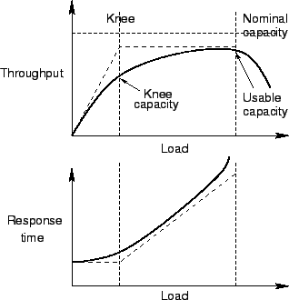
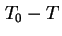

Next: การพิจารณาตัววัดประสิทธิภาพ
Up: การเลือกเทคนิคการประเมิน และตัววัดประสิทธิภาพ
Previous: อัตราความสำเร็จ
Contents
Index
โดยทั่วไปอัตราผลสำเร็จของงานเพิ่มขึ้นในขณะที่ภาระงานในระบบเพิ่มขึ้น เมื่อถึงจุดหนึ่งอัตราความสำเร็จ จะไม่เพิ่มขึ้นมากเท่าขณะแรกเริ่มหรืออาจลดลง ดังแสดงในรูป 2.4 อัตราผลสำเร็จสูงสุดของระบบที่สามารถเป็นไปได้ในสภาวะอุดมคติเรียกว่า System Capacity . ในระบบเครือข่ายอัตราผลสำเร็จสูงสุดเรียกว่า แบนวิทท์ (Bandwidth) ซึ่งมักจะมีหน่วยเป็นบิตต่อวินาที (bps)
ในบางครั้ง ขณะที่อัตราผลสำเร็จของงานสูงมาก ค่าเวลาตอบสนองก็มีค่ามากเกินกว่าที่จะสามารถยอมรับได้ ในกรณีนั้น เราจึงมักจะพิจารณาค่าอัตราผลสำเร็จที่สามารถทำได้ภายใต้การกำหนดของเวลาตอบสนอง หรืออาจเรียกว่าความสามารถที่ทำได้ (Usable Capacity)
ในการทำงานส่วนใหญ่ เรามักจะพิจารณาช่วงการเปลี่ยนแปลงของอัตราผลสำเร็จกับเวลาตอบสนองเป็นจุดทำงานของระบบ เช่น แสดงในรูป 2.4 หลังจากจุดดังกล่าวเวลาตอบสนองเพิ่มขึ้นมากจนไม่สามารถยอมรับได้ ในขณะซึ่งอัตราผลสำเร็จเพิ่มขึ้นไม่มากนัก ก่อนจุดเปลี่ยนผันเวลาตอบสนองมีการเพิ่มขึ้นอย่างช้าๆ แต่อัตราความสำเร็จเพิ่มขึ้นอย่างรวดเร็วเมื่อภาระงานเพิ่มขึ้น อัตราผลสำเร็จที่จุดเปลี่ยนผันเรียกว่า มี Knee Capacity ซึ่งมักจะอยู่ในรูปของภาระงาน ตัวอย่างเช่น จำนวนผู้ใช้งานในระบบ
Figure 2.4:
อัตราผลสำเร็จที่สามารถทำได้ของระบบ
|

|
อัตราส่วนของอัตราผลสำเร็จต่ออัตราผลสำเร็จสูงสุด เรียกว่าประสิทธิภาพ (Efficiency) เช่น ถ้าอัตราผลสำเร็จของเครือข่ายอินเตอร์เน็ตมีเพียง 25 %
ภาระงาน (Utilization) ภาระงานของทรัพยากรวัดเป็นส่วนของเวลาที่ทรัพยากรทำงานหารด้วยเวลาทั้งหมด เวลาที่ทรัพยากรไม่ได้ใช้งานเรียกว่า Idle Time
ผู้ดูแลระบบมักจะสนใจว่าทรัพยากรที่มีอยู่ ได้รับการใช้งานเท่าไรคุ้มค่าหรือไม่ ซึ่งจะดูจากค่าดังกล่าว
ตัววัดประสิทธิภาพพื้นฐานอื่นๆ ประกอบด้วย
- ค่าความความน่าเชื่อถือของระบบ (Reliability) วัดเป็นความน่าจะเป็นที่ระบบจะสามารถทำงานได้อย่างถูกต้อง ในช่วงเวลา 
- ความสามารถในการบริการของระบบ (Availability) นิยามเป็น อัตราส่วนของเวลาที่ระบบสามารถให้บริการได้
- เวลาที่ระบบไม่สามารถให้บริการได้เรียกว่า Downtime เวลาที่ระบบสามารถให้บริการได้เรียกว่า Uptime ค่าเฉลี่ยของ Uptime เรียกว่าค่า MTTF
Vara Varavithya
2002-03-09